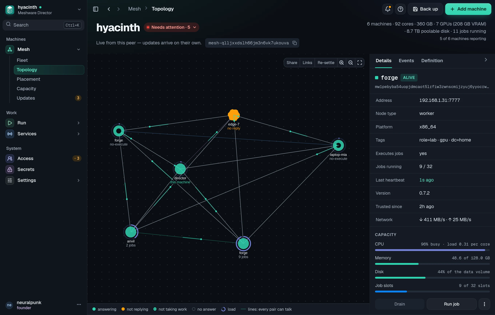
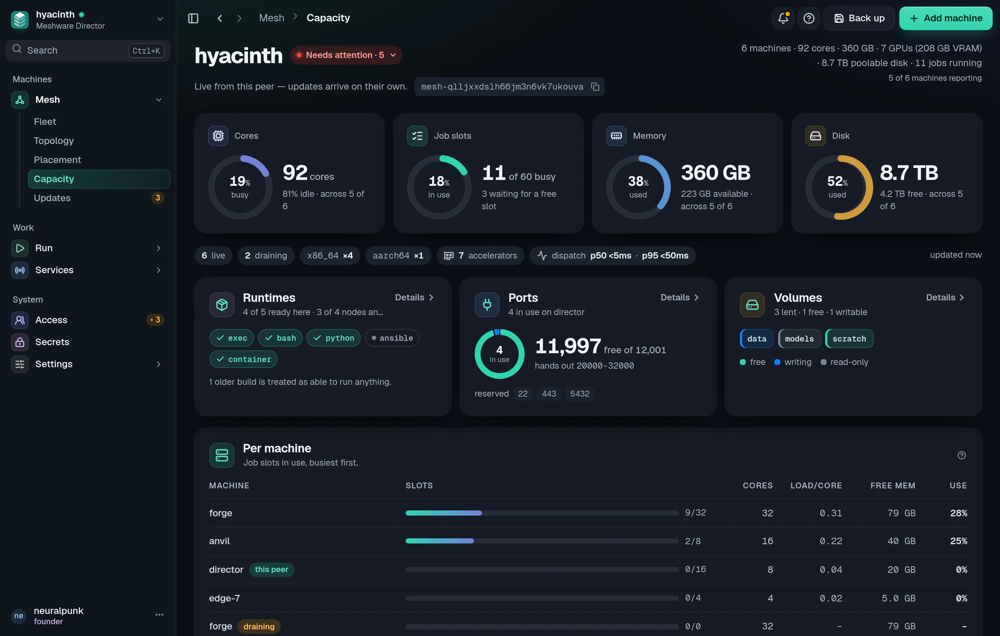

0
Kubernetes and Nomad require three to five before scheduling any work. Slurm requires two, plus a database.
Operational costMeshware joins any number of Linux machines into a single peer-to-peer compute mesh. Install one binary per machine, pair them, and schedule work across every CPU, GPU and gigabyte of memory, with no control plane, no database and no single point of failure.
meshnode is both the agent and the command-line interface. With no control plane, no database and no quorum, there is no infrastructure to provision before you begin and none to maintain afterwards. Meshware Director gives you a live view of the entire mesh.

Every figure below links to the document that records it, alongside the test or benchmark that produced it.
0
Kubernetes and Nomad require three to five before scheduling any work. Slurm requires two, plus a database.
Operational cost2.8s
6.8 s with one node frozen mid-run: the remaining node absorbs its share rather than waiting.
Operational cost51ms
Unreachable peers are detected within 5–10 seconds and readmitted within 51 ms of returning.
Partition tests1,000nodes
Simulated before every release. A build that fails the simulation does not ship.
Tested limitsOne static executable per Linux machine. No runtime dependencies, no database, and no distribution-specific packages.
Both machines display the same six-digit code. Confirm it, and the new node joins with its own cryptographic identity. Every connection is encrypted.
Target any node, every node, or one task per available core. Output streams back in real time, labelled by machine.
Work is never pre-partitioned. Each node pulls the next batch as capacity frees up, and work held by an unresponsive node is reassigned.
$ curl -fsSL https://raw.githubusercontent.com/neuralpunk/meshware/main/packaging/install.sh | sh downloading meshnode v1.1.0 (x86_64)… checksum matches SHA256SUMS provenance verified: built by github.com/neuralpunk/meshware's release workflow (gh attestation) installed /usr/local/bin/meshnode $ meshnode --version meshnode 1.1.0 protocol 2.36
$ meshnode run 'uname -a' --fanout all ▸ running on 4 machines · fan-agq5ltebqi [forge] Linux forge 6.12.0 x86_64 GNU/Linux [anvil] Linux anvil 6.12.0 x86_64 GNU/Linux [edge-7] Linux edge-7 6.8.0 aarch64 GNU/Linux [lab-2] Linux lab-2 6.12.0 x86_64 GNU/Linux ✓ All 4 machines succeeded · 21ms
Timings reflect the measured benchmark: 2.8 s with both nodes healthy, 6.8 s with one frozen.
Most schedulers begin by provisioning a control plane. Meshware begins with any machine you already have. There is no coordinator to deploy, no database to operate, no quorum to protect, and no central component whose failure stops your work.
Minimum documented topology for each project. Sources and methodology
Multi-node jobs start together or not at all. GPUs are allocated as discrete devices, so frameworks such as torchrun run unmodified.
meshnode run ./train.sh --gang 8 --gpus 1
Identical work with identical inputs never runs twice. A result computed on one node is reused by every other node in the mesh.
meshnode run ./build.sh --cacheable --cache-outputs 'out/*'
Prefix your compiler with meshnode cc to distribute and cache compilation across every available core.
meshnode cc gcc -c src/parser.c -o parser.o
Deployments keep services running across nodes, with containers, port allocation, health checks, canary rollouts, automatic rollback and DNS names.
meshnode deployment put web.yaml
Quiet hours per machine, graceful draining before maintenance, and an explanation of every placement decision.
meshnode drain --until 06:00 --reason "kernel update"
Publish a new binary once. Nodes distribute it peer-to-peer, verify its signature, and upgrade in health-gated waves.
meshnode upgrade --on tag=canary --to 1.1.0
A native Linux desktop application with complete parity with the command line, including onboarding machines over SSH and coordinating fleet upgrades.





Meshware is designed to operate indefinitely without any service from its maintainers. Releases are published periodically; between them, your mesh is entirely self-sufficient.
Available for Linux on x86_64 and aarch64 as a single static binary, independent of distribution and glibc version.
Run a three-node mesh on a single machine, bound to loopback and removed when you exit.
$ git clone https://github.com/neuralpunk/meshware && cd meshware && make demoDownload the archive for your architecture, verify its build provenance, and install it.
$ gh attestation verify meshnode-v1.1.0-x86_64-unknown-linux-musl.tar.gz --repo neuralpunk/meshware$ tar xzf meshnode-v1.1.0-x86_64-unknown-linux-musl.tar.gz && sudo install -m755 meshnode /usr/local/bin/Detects your architecture, verifies the download and installs the binary. It starts no services and writes no configuration.
$ curl -fsSL https://raw.githubusercontent.com/neuralpunk/meshware/main/packaging/install.sh | shRequires Rust and a C compiler; make doctor reports anything missing. Director additionally requires Node.js and WebKitGTK.
$ make && sudo make install$ make director